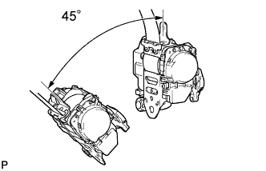
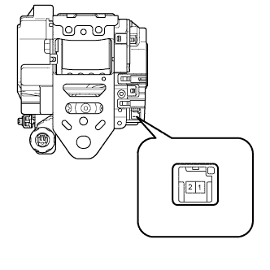
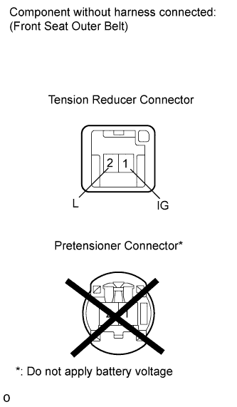

FRONT SEAT OUTER BELT ASSEMBLY > INSPECTION |
| 1. INSPECT FRONT SEAT OUTER BELT ASSEMBLY |
 |
Before installing the seat belt, check the ELR.
When the inclination of the retractor is 15° or less, check that the belt can be pulled from the retractor. When the inclination of the retractor is over 45°, check that the belt locks. If the operation is not as specified, replace the seat belt assembly.
  |
Check the tension reducer operation.
Connect the battery positive (+) lead to terminal 1 (IG) of the tension reducer connector and the negative (-) lead to terminal 2 (L).
Check that an operating sound is heard when the magnetized solenoid is attracting the plunger.
Pull out the seat belt and let it retract. Listen to the operating sound.
Pull out the seat belt again, disconnect the battery negative (-) lead and let it retract. Listen to the operating sound again and check that the operating sound volume has increased.
If the result is not as specified, replace the outer belt assembly.
for Passenger Seat:
Check the fastening function of the child restraint system.
When the belt is pulled out fully, the belt should automatically start to retract.
After the belt has fully retracted, the belt should be able to be pulled out and retracted again.
If the operation is not as specified, replace the belt assembly.